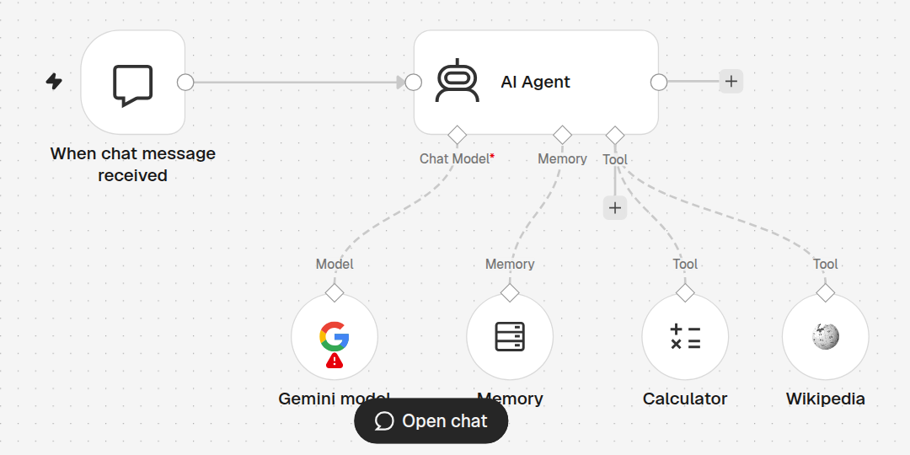
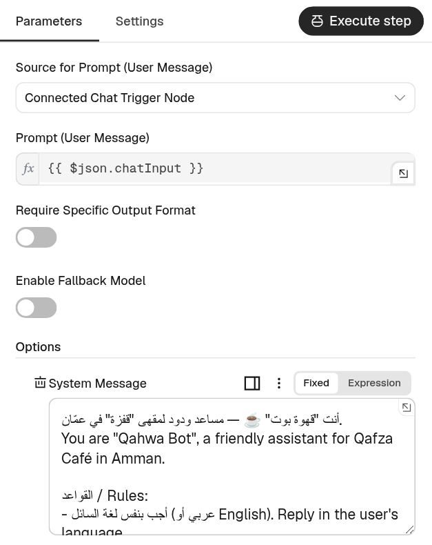
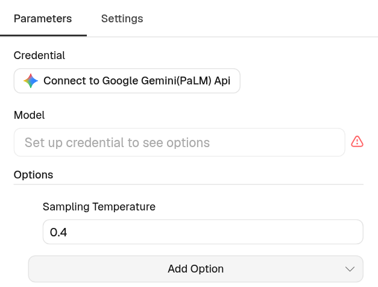
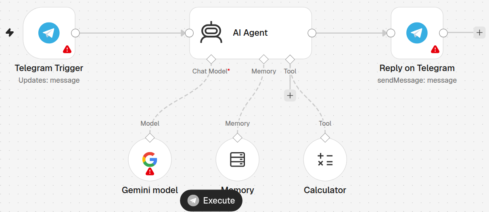
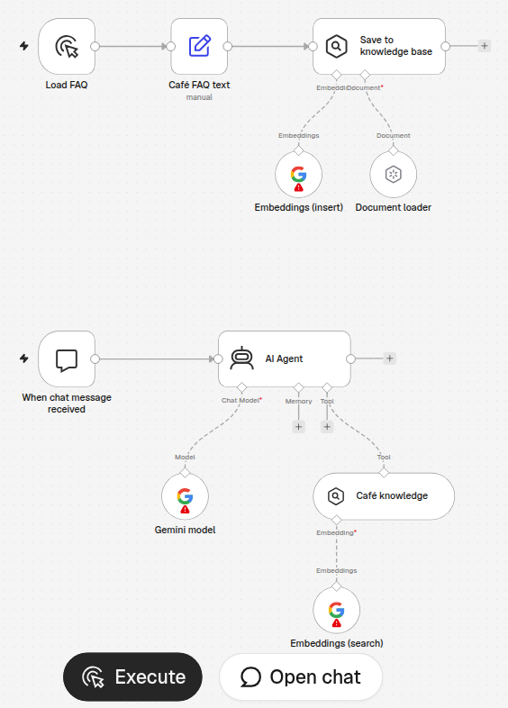

أهلاً بكم في الحصة الرابعة والأخيرة! اليوم هو اليوم الذي انتظرناه: سنبني مساعداً ذكياً خاصاً بنا. ليس روبوتاً يكرر جملاً جاهزة، بل وكيلاً يفهم السؤال، ويتذكّر اسمك، ويحسب لك فاتورتك، ويبحث في الموسوعة. سنجرّبه أولاً داخل n8n، ثم ننقله إلى تيليجرام لتراسله من هاتفك. اسألوا الحضور: من استخدم ChatGPT أو Gemini من قبل؟ ارفعوا أيديكم. ممتاز، اليوم ستعرفون كيف يعمل من الداخل، وكيف تصنعون واحداً لمشروعكم. لا تحتاجون أي برمجة، فقط ما تعلّمناه في الحصص السابقة. هيا نبدأ بتذكير سريع.
RECAP → TODAY
From Flows to an AI Assistant
ماذا تعلّمنا؟ وماذا سنبني اليوم؟
✅ أنت تعرف الآن:
الـ Trigger يبدأ، والعُقَد تكمل العمل
البيانات تتنقّل كـ Items بصيغة JSON
التعبيرات {{ }} والمفاتيح Credentials
عقدة IF وإرسال بريد Gmail
Execute للتجربة و Publish للتشغيل
🎯 هدف اليوم: «قهوة بوت»مثال · Example
مرحبا! كم سعر 2 لاتيه وكيكة؟
🧮 Calculator · 2 × 2.5 + 3 = 8
المجموع 8 دنانير ☕ نتشرف بزيارتك في شارع الرينبو!
💬 داخل n8n أولاً📱 ثم على تيليجرام
قبل أن نبدأ، لنتذكّر ما نعرفه. تعلّمنا أن كل سير عمل يبدأ بمُشغِّل، ثم تمر البيانات بين العُقَد مثل استمارات معبّأة اسمها JSON. استخدمنا التعبيرات بين الأقواس المزدوجة لنأخذ قيمة من عقدة سابقة، وحفظنا مفاتيحنا في Credentials مثل مفاتيح على الميدالية. وبنينا شرط IF وأرسلنا بريداً بـ Gmail. اليوم نضيف شيئاً جديداً كلياً: عقلاً. انظروا إلى اليسار: زبون يسأل عن سعر طلبه، والبوت يحسبه بأداة الآلة الحاسبة ويرد بلطف. هذا ما سنبنيه، أولاً داخل n8n ثم على تيليجرام. سؤال للقاعة: لو كان عندكم مشروع، ما أول سؤال يتكرر عليكم من الزبائن؟
PART 1 · AI BASICS
What is an LLM?
الـ LLM = إكمال تلقائي قرأ مكتبة كاملة
من حياتنا📱⌨️
الإكمال التلقائي في هاتفك
تكتب «صباح» فيقترح «الخير». تعلّم من رسائلك أنت فقط.
=
في التقنية🧠📚
LLM · نموذج لغوي كبير
نفس الفكرة، لكنه قرأ ملايين الكتب والمواقع، فيكمل جملاً وإجابات كاملة.
لنبدأ بالسؤال الكبير: ما هو الذكاء الاصطناعي الذي نتحدث معه؟ اسمه LLM، أي نموذج لغوي كبير. افتحوا لوحة المفاتيح في هواتفكم واكتبوا «صباح»، ماذا يقترح؟ «الخير». الهاتف تعلّم هذا من رسائلكم. الـ LLM هو نفس الفكرة تماماً، لكنه لم يقرأ رسائلكم فقط، بل قرأ كمية هائلة من الكتب والمقالات والمواقع. لذلك لا يقترح كلمة واحدة، بل يكمل إجابة كاملة تبدو ذكية جداً. احفظوا هذه الجملة: إكمال تلقائي قرأ مكتبة كاملة. ستساعدنا لنفهم نقاط قوته ونقاط ضعفه أيضاً.
VIDEO · 55 SEC
What Is an LLM?
فيديو: ما هو النموذج اللغوي؟
👀 ما الحدود الثلاثة؟ وما علاج كل منها؟
قارئ نَهِم يتوقّع الكلمة التالية. يخترع أحياناً، ومعرفته تتوقف عند تاريخ، وضعيف في الحساب. العلاج: حقائق ومستندات وأدوات. الأرقام في الفيديو توضيحية.
كيف يعمل فعلاً؟ تخيّلوا الجملة على اليسار: «القهوة العربية تُقدَّم عادةً مع…» ماذا ستكملون؟ أغلبكم قال التمر. النموذج يفعل الشيء نفسه: يحسب لكل كلمة احتمالاً ويختار الأرجح، ثم يكرر ذلك للكلمة التالية، وهكذا حتى يكتب فقرة كاملة. تعلّم هذه الاحتمالات أثناء التدريب، أي Training، من نصوص ضخمة. أشهر النماذج: ChatGPT من OpenAI، وGemini من Google وهو الذي سنستخدمه اليوم لأن له مفتاحاً مجانياً، وDeepSeek، وLlama من Meta. النقطة المهمة: هو يتوقّع، لا يتذكّر حقائق مثل الإنسان. وهذا يقودنا إلى حدوده.
LIMITS
4 Things an LLM Does Badly
حدود الـ LLM… وكيف سنعالجها اليوم
🎭
يخترع بثقةHallucination
قد يعطيك سعراً أو معلومة خاطئة وهو واثق تماماً.
الحل: تعليمات واضحة + RAG
📅
معلوماته قديمةKnowledge cutoff
توقّف تعلّمه عند تاريخ معيّن، ولا يعرف ما بعده.
الحل: أداة بحث مثل Wikipedia
🧮
الحساب ضعيفBad at math
يتوقّع شكل الرقم ولا يحسبه فعلاً.
الحل: أداة Calculator
🫥
ينسىNo memory
كل رسالة جديدة كأنها أول لقاء بينكما.
الحل: عقدة Memory
لأنه يتوقّع ولا يعرف، له أربع نقاط ضعف مهمة. أولاً: يخترع بثقة، وهذا اسمه Hallucination أو الهلوسة؛ قد يقول إن اللاتيه بدينارين وهو لا يعرف أسعاركم. ثانياً: معلوماته تتوقف عند تاريخ التدريب. ثالثاً: الحساب؛ هو يتوقّع شكل الرقم، فقد يخطئ في جمع بسيط. رابعاً: لا ذاكرة له بين الرسائل إلا إذا أعطيناه واحدة. الخبر الجميل: كل مشكلة لها حل في n8n، وانظروا إلى السطر الأخضر في كل بطاقة. اليوم سنضيف الذاكرة والآلة الحاسبة وويكيبيديا، ونكتب تعليمات واضحة. سؤال: أي نقطة ضعف تخيفكم أكثر لو كان البوت يكلّم زبائنكم؟
PROMPTS
The System Message
رسالة النظام = الوصف الوظيفي لموظف جديد
من حياتنا📋🧑💼
ورقة التعليمات لموظف جديد
من أنت؟ ما عملك؟ ما الأسعار؟ ما الممنوع؟
=
في التقنية⚙️🤖
System Message
نص ثابت يقرؤه الوكيل قبل كل محادثة، فيحدد شخصيته وقواعده.
💡 الفرقPrompt = ما يكتبه الزبون كل مرة. System Message = ما تكتبه أنت مرة واحدة.
الآن كيف نجعل النموذج يعمل لمقهانا وليس لأي أحد؟ تخيّلوا أنكم وظفتم شخصاً ذكياً جداً لكنه لا يعرف شيئاً عن محلكم. ماذا تعطونه في أول يوم؟ ورقة: أنت تعمل في مقهى قفزة، أسعارنا كذا، نفتح الساعة كذا، ولا تعد الزبائن بشيء لا نملكه. هذه الورقة في عالم الذكاء الاصطناعي اسمها System Message أو رسالة النظام. الوكيل يقرؤها قبل كل محادثة. أما الـ Prompt فهو رسالة الزبون نفسه، تتغير كل مرة. أنتم تكتبون رسالة النظام مرة واحدة، والزبائن يكتبون الأسئلة. كلما كانت الورقة أوضح، كان الموظف أفضل.
PROMPT RECIPE
Bad Prompt vs Good Prompt
الوصفة: الدور · المهمة · السياق · القواعد · الشكل
🎭 Role · الدور🎯 Task · المهمة📋 Context · السياق🚦 Rules · القواعد📐 Format · الشكل
❌ ضعيفBad prompt
«أنت مساعد. ساعد الزبائن.»
النتيجة: ردود عامة طويلة، وأسعار مخترعة.
✅ قويGood prompt
🎭 أنت «قهوة بوت»، مساعد مقهى قفزة في عمّان.
🎯 أجب عن أسئلة الزبائن واحسب طلباتهم.
📋 لاتيه 2.5 دينار، كيك 3 دنانير، نفتح 8 ص.
🚦 لا تخترع. إن لم تعرف قل «لا أعرف».
📐 جمل قصيرة، وبنفس لغة السائل.
لنقارن. على اليمين تعليمات ضعيفة: «أنت مساعد، ساعد الزبائن». ماذا سيحدث؟ سيرد ردوداً عامة طويلة، وإذا سُئل عن سعر سيخترعه. على اليسار تعليمات قوية مبنية على وصفة من خمسة أجزاء: الدور، أي من أنت. المهمة، ماذا تفعل. السياق، المعلومات التي تحتاجها مثل الأسعار والساعات. القواعد، ما المسموح والممنوع. والشكل، كيف يبدو الرد. لا تحتاجون كلمات معقدة، اكتبوا كأنكم تشرحون لموظف جديد. تمرين سريع: كل واحد يفكر بمشروعه، ما الجملة الأولى، جملة الدور، التي سيكتبها؟ دقيقة واحدة ثم نسمع مثالين.
REAL PROMPT · chat-agent.json
Our Café Bot’s System Message
رسالة النظام الحقيقية لـ «قهوة بوت» في ملف اللاب
🎭 Role · الدور
أنت "قهوة بوت" ☕ — مساعد ودود لمقهى "قفزة" في عمّان.
📐 Format · الشكل
أجب بنفس لغة السائل. جمل قصيرة وواضحة، مع إيموجي واحد على الأكثر.
📋 Context · السياق
نفتح يومياً 8 ص – 11 م. القهوة العربية 1.5، لاتيه 2.5، كيك الشوكولاتة 3 دنانير. شارع الرينبو.
🧰 Tools · الأدوات
استخدم Calculator لأي حساب. Wikipedia لأسئلة المعرفة العامة فقط.
🚦 Rules · القواعد
إذا لم تعرف الجواب قل ذلك بصراحة ولا تخترع.
مكانها: AI Agent → Options → System Message · النص مختصر قليلاً هنا
هذه رسالة النظام الحقيقية الموجودة في ملف اللاب chat-agent.json، داخل عقدة AI Agent تحت Options ثم System Message. لوّنّا كل سطر حسب الوصفة. السطر الأول هو الدور: قهوة بوت لمقهى قفزة. بعده الشكل: نفس لغة السائل وجمل قصيرة. ثم السياق: الساعات والأسعار والعنوان، وهذه هي المعلومات الوحيدة التي يجب أن يعتمد عليها. ثم سطر مهم جداً يخبره متى يستخدم أي أداة. وأخيراً القاعدة الذهبية: إذا لم تعرف قل ذلك ولا تخترع. في الملف الأصلي النص مكتوب بالعربية والإنجليزية معاً، لأن النموذج يفهم الاثنين. لاحقاً في التحدّي ستغيّرون هذه الأسطر لمشروعكم أنتم.
PART 2
From Chatbot to Agent
من روبوت يتكلّم… إلى وكيل يعمل
انتهينا من الأساسيات: عرفنا ما هو الـ LLM، وما حدوده، وكيف نكتب له تعليمات واضحة. الآن ننتقل إلى الجزء الأهم في الحصة: الوكيل الذكي، أي AI Agent. الكلمة منتشرة جداً هذه الأيام، وكل شركة تقول إن عندها وكيلاً. سنفهم معناها الحقيقي ببساطة، ثم نرى كيف يبدو الوكيل داخل n8n، وما العُقَد التي يتكوّن منها. سؤال قبل أن ننتقل: برأيكم، ما الفرق بين شخص يعطيك نصيحة وشخص ينفّذ لك المهمة بنفسه؟ احتفظوا بجوابكم، ستجدونه في الشريحة القادمة.
CHATBOT vs AGENT
Talking vs Doing
روبوت المحادثة يتكلّم فقط… والوكيل يعمل
💬 روبوت محادثةChatbot
يجيب مما يعرف فقط.
احجز لي طاولة الساعة 7
يمكنك الاتصال بالمقهى لحجز طاولة 📞
🤖 وكيل ذكيAI Agent
يفكّر، ثم ينفّذ بالأدوات.
احجز لي طاولة الساعة 7
📅 Google Calendar · create event
تم الحجز الساعة 7 مساءً ✅
هذا هو الفرق. على اليمين روبوت محادثة عادي: تطلب منه حجز طاولة، فيجيبك بنصيحة: اتصل بالمقهى. هو يتكلّم فقط. على اليسار وكيل ذكي: نفس الطلب، لكنه يستخدم أداة، هنا Google Calendar، فيضيف الموعد فعلاً ثم يخبرك أن الحجز تم. إذن الوكيل يستطيع أن يفعل أشياء: يحسب، يبحث، يرسل بريداً، يحفظ في جدول. وكل هذه الأدوات موجودة أصلاً في n8n، وهذه قوة n8n: كل العُقَد التي تعلمناها يمكن أن تصبح أدوات للوكيل. اليوم سنعطيه أدوات بسيطة وآمنة: الآلة الحاسبة وويكيبيديا. وفي المشاريع القادمة يمكنكم إعطاؤه Calendar وGmail.
ANALOGY
Agent = Brain + Notebook + Hands
الوكيل الذكي = عقل + دفتر ملاحظات + يدان
🤖 = 🧠 + 📒 + 🙌
🧠
العقلChat Model
يفهم السؤال ويقرّر ماذا يفعل. مثال: Gemini
📒
دفتر الملاحظاتMemory
يكتب ما قيل في المحادثة ليتذكّر اسمك وطلبك.
🙌
اليدانTools
تنفّذ العمل: تحسب، تبحث، ترسل، تحفظ.
احفظوا هذه المعادلة، هي أهم شيء اليوم: الوكيل يساوي عقلاً زائد دفتر ملاحظات زائد يدين. العقل هو نموذج اللغة، مثل Gemini، يفهم السؤال ويقرر. دفتر الملاحظات هو الذاكرة؛ تذكرون أن النموذج ينسى؟ الدفتر يكتب آخر الرسائل فيتذكر أن اسمك سارة وأنك طلبت لاتيه. واليدان هما الأدوات التي تنفّذ. عقل بلا يدين يعطيك نصائح فقط، ويدان بلا عقل لا تعرفان ماذا تفعلان. عندما نجمعها نحصل على وكيل حقيقي. وفي n8n ستجدون هذه الأجزاء الثلاثة حرفياً كدوائر صغيرة تحت عقدة الوكيل، كما سنرى الآن.
ON THE CANVAS
The Agent in n8n
هكذا يبدو الوكيل على لوحة n8n
💬Chat Triggerوصلت رسالة
🤖AI Agentالوكيل
🧠📒🧮📚
💬Chatيظهر الرد
🧠 Gemini model · العقل📒 Memory · الدفتر🧮 Calculator · يد📚 Wikipedia · يد
💡الدوائر المنقّطة = عُقَد فرعية (sub-nodes). تتصل من أسفل الوكيل، لا من الجانب.
هذا رسم مبسّط لما سنبنيه. من اليسار: مُشغِّل المحادثة، أي Chat Trigger، يستيقظ عندما يكتب أحد رسالة. يمرّر الرسالة إلى عقدة AI Agent. لاحظوا الدوائر المنقّطة تحت الوكيل: هذه ليست خطوات في الخط الرئيسي، بل أجزاء يستعين بها الوكيل: العقل Gemini، والدفتر Memory، ويدان: الآلة الحاسبة وويكيبيديا. اسمها sub-nodes أي عُقَد فرعية، وتتصل من الأسفل. ثم يعود الرد إلى نافذة المحادثة. الوكيل هو المدير؛ هو من يقرر متى يستعمل الآلة الحاسبة ومتى يكتفي بالكلام. سؤال: لو سألته «متى تفتحون؟» هل يحتاج أي أداة؟ صحيح، لا، المعلومة في رسالة النظام.
VIDEO · 1 MIN
How an Agent Thinks
كيف يفكّر الوكيل؟ يفهم ← يختار أداة ← يجيب
① يقرأ السؤال والتعليمات② يقرّر: هل أحتاج أداة؟③ يستخدمها ثم يكتب الجواب
لنشاهد فيديو قصيراً، أقل من دقيقة، يوضح ما يحدث داخل رأس الوكيل عندما تصله رسالة. انتبهوا إلى ثلاث مراحل: أولاً يقرأ سؤال المستخدم مع رسالة النظام ودفتر الذاكرة. ثانياً يسأل نفسه: هل أستطيع الإجابة مباشرة، أم أحتاج أداة؟ ثالثاً إذا احتاج أداة يستخدمها، يأخذ النتيجة، ثم يكتب الجواب النهائي. أحياناً يستخدم أكثر من أداة قبل أن يجيب. بعد الفيديو سأسألكم: في مثال «2 لاتيه وكيكة»، في أي مرحلة استخدم الآلة الحاسبة؟ شغّلوا الفيديو الآن. إذا لم يعمل الفيديو، اشرح المراحل الثلاث من الشرائح مباشرة.
n8n AI NODES
The 5 Pieces in n8n
القطع الخمس للوكيل في n8n
Chat Trigger: يبدأ عند وصول رسالة
AI Agent: المدير الذي يقرّر
Chat Model: Gemini مجاني، أو OpenAI مدفوع
Simple Memory: يتذكّر آخر 10 رسائل
Tools: Calculator، Wikipedia…

زر Open chat في أسفل اللوحة للتجربة
هذه صورة حقيقية من n8n لملف اللاب الأول. في الصف العلوي: مُشغِّل المحادثة واسمه الكامل When chat message received، ثم عقدة AI Agent. تحت الوكيل ثلاث فتحات: Chat Model وعليها نجمة حمراء لأنها إلزامية، لا وكيل بلا عقل. ثم Memory، ثم Tool ويمكن أن نوصل بها أدوات كثيرة. النموذج هنا Google Gemini لأن له مفتاحاً مجانياً، ويمكن بدلاً منه استخدام OpenAI لكنه مدفوع. الذاكرة اسمها Simple Memory وضبطناها على آخر 10 رسائل. ولاحظوا العلامة الحمراء على Gemini: تعني أن المفتاح ناقص، وسنضيفه بعد قليل. وفي الأسفل زر Open chat الذي نجرّب منه.
AI AGENT NODE
Inside the AI Agent Node
داخل عقدة الوكيل: من أين السؤال؟ وأين التعليمات؟
Source for Prompt: Connected Chat Trigger Node
السؤال = {{ $json.chatInput }}
Options → System Message: الوصف الوظيفي
في الأسفل: Chat Model* · Memory · Tool

عقدة AI Agent بعد فتحها بنقرتين
عندما ننقر مرتين على عقدة AI Agent نرى هذه الشاشة. أول حقل: Source for Prompt، أي من أين يأتي سؤال المستخدم؟ القيمة «Connected Chat Trigger Node»، يعني من مُشغِّل المحادثة. وتحته التعبير chatInput بين الأقواس المزدوجة؛ تذكرون التعبيرات من الحصة الماضية؟ هذا هو نص الرسالة التي كتبها المستخدم. في الأسفل تحت Options نجد System Message، وهنا نلصق الوصف الوظيفي الذي رأيناه. وأسفل النافذة نرى الفتحات الثلاث مرة أخرى: النموذج والذاكرة والأدوات. لن نغيّر شيئاً آخر هنا اليوم. القاعدة: السؤال يأتي من فوق، والتعليمات في System Message.
TOOLS
Tools = The Agent’s Hands
الأدوات: يدا الوكيل
🧮
آلة حاسبةCalculator
حساب دقيق للطلبات والخصومات.
📚
موسوعةWikipedia
معلومات عامة من الموسوعة الحرّة.
🌐
أي خدمةHTTP Request Tool
تذكّر النادل! طقس، عملات، أي خدمة.
🧩
أي عقدةAny n8n node
Gmail، Sheets، Calendar… كلها تصبح أدوات.
💡الوكيل يقرأ اسم الأداة ووصفها ليقرّر متى يستخدمها. الاسم الواضح = استخدام صحيح.
الأدوات هي يدا الوكيل. اليوم نستخدم أداتين جاهزتين لا تحتاجان أي مفتاح: الآلة الحاسبة وويكيبيديا. لكن الإمكانات أكبر بكثير. أداة HTTP Request تسمح للوكيل بأن يطلب من أي API؛ تذكرون النادل في المطعم؟ يمكنه أن يسأل عن الطقس أو سعر الدولار. والأجمل: معظم عُقَد n8n نفسها يمكن أن تصبح أدوات، مثل Gmail وGoogle Sheets وCalendar. كيف يعرف الوكيل أي أداة يستخدم؟ يقرأ اسمها ووصفها، تماماً مثل موظف يقرأ الملصق على الدرج قبل أن يفتحه. لذلك سمّوا أدواتكم أسماء واضحة. سؤال: لو أردتم أن يرسل البوت فاتورة بالبريد، أي عقدة ستعطونها له؟
PART 3
Let’s Build It!
نبني الوكيل خطوة بخطوة… ثم ننقله إلى تيليجرام
☕ استراحة 15 دقيقة🔑 جهّز حساب Google📱 جهّز تيليجرام
وصلنا إلى الجزء العملي! قبل أن نبدأ البناء، نأخذ استراحة 15 دقيقة. خلال الاستراحة جهّزوا شيئين: أولاً، تأكدوا أنكم تستطيعون الدخول إلى حساب Google الخاص بكم، لأننا سنحتاجه لأخذ مفتاح Gemini المجاني. ثانياً، ثبّتوا تطبيق تيليجرام على الهاتف إذا لم يكن عندكم، وسجّلوا الدخول. بعد الاستراحة سأبني الوكيل أمامكم من لوحة فارغة، خطوة بخطوة، وأنتم تتابعون. ثم تفتحون ملفات اللاب وتجربون بأنفسكم. إذا علق أحد في أي خطوة، ارفعوا أيديكم فوراً؛ لا تنتظروا حتى النهاية. استراحة سعيدة!
STEP 0 · API KEY
Get a Free Gemini API Key
مفتاح Gemini المجاني = بطاقة العضوية
افتح aistudio.google.com/apikey وادخل بحساب Google
اضغط Create API key
انسخ المفتاح، يبدأ عادةً بـ AIza
في n8n: Gemini model ← Credential ← Create new
الصق في API Key ← Save ✅
🪪
بطاقة العضويةAPI Key
تُثبت أنك مشترك، فيخدمك المطبخ.
🔐عامله ككلمة السر: لا ترسله لأحد، ولا تصوّره في لقطة شاشة.
الخطوة صفر: مفتاح Gemini. تذكرون بطاقة العضوية؟ المفتاح يثبت لـ Google أنكم مسجّلون، فتسمح لكم باستخدام النموذج. افتحوا الرابط aistudio.google.com/apikey، سجّلوا الدخول بحساب Google، ثم Create API key. قد يطلب منكم اختيار مشروع أو الموافقة على الشروط، اقبلوا الافتراضي. سيظهر مفتاح طويل يبدأ عادةً بالحروف AIza. انسخوه. ثم في n8n افتحوا عقدة Gemini model، واضغطوا على Credential ثم Create new، والصقوا المفتاح في حقل API Key واحفظوا. يجب أن تظهر رسالة خضراء بنجاح الاتصال. تحذير مهم: هذا المفتاح مثل كلمة السر، من يملكه يستخدم حصتكم. لا تضعوه في مجموعة واتساب ولا في صورة.
CHAT MODEL
The Gemini Model Node
المفتاح ← النموذج ← درجة الإبداع
Credential: Google Gemini(PaLM) Api
Model: يظهر بعد المفتاح، اختر نموذج «flash»
Temperature 0.4: مقبض الإبداع
0 = دقيق ومتوقّع · 1 = مبدع وعشوائي

قبل إضافة المفتاح: «Set up credential to see options»
هذه عقدة العقل: Google Gemini Chat Model، وسمّيناها في اللاب Gemini model. فيها ثلاثة أشياء. أولاً Credential، هنا نختار المفتاح الذي أنشأناه؛ اسم نوعه في n8n هو Google Gemini(PaLM) Api. ثانياً Model، ولاحظوا أنه فارغ ويقول: جهّز المفتاح لترى الخيارات. بعد إضافة المفتاح تظهر قائمة النماذج؛ اختاروا نموذجاً فيه كلمة flash، فهو سريع ومناسب للحصة المجانية. ثالثاً Sampling Temperature، أي درجة الحرارة، وهي مثل مقبض الإبداع: صفر يعني ردوداً دقيقة ومتشابهة، وواحد يعني إبداعاً أكثر وأخطاء أكثر. لبوت يذكر الأسعار نريد رقماً منخفضاً، لذلك اخترنا 0.4.
LIVE BUILD · STEPS 1–4
From Empty Canvas to a Talking Bot
من لوحة فارغة إلى روبوت يتكلّم
+ ← ابحث chat ← Chat Trigger
+ بعده ← AI Agent
تحت الوكيل: Chat Model + ← Google Gemini Chat Model ← المفتاح
اضغط Open chat واكتب: «مرحبا 👋»
💬Chatمحادثة
🤖AI Agentالوكيل
🧠
💬 Chatمثال · Example
مرحبا 👋
أهلاً! كيف يمكنني مساعدتك اليوم؟
الآن أبني أمامكم من الصفر. أنشئ سير عمل جديداً. الخطوة الأولى: أضغط على الزائد وأبحث عن chat، وأختار When chat message received. الخطوة الثانية: الزائد بعده، وأختار AI Agent. الخطوة الثالثة: تحت الوكيل أضغط زائد Chat Model، وأختار Google Gemini Chat Model، وأختار المفتاح الذي حفظناه. الخطوة الرابعة: أضغط Open chat في الأسفل وأكتب مرحبا. ها هو يرد! لاحظوا: هو يتكلّم، لكن لو سألته عن سعر اللاتيه في مقهانا؟ لا يعرف شيئاً عنا، وقد يخترع رقماً. جرّبوا اسألوه الآن. لهذا نحتاج الخطوة الخامسة: رسالة النظام.
LIVE BUILD · STEPS 5–6
Add a Persona, then Memory
أعطه شخصية… ثم دفتر ملاحظات
⑤ System Message 🎭مثال · Example
من أنت؟
قبل:
أنا نموذج لغوي كبير، دربتني Google.
بعد:
أنا قهوة بوت ☕ مساعد مقهى قفزة. كيف أخدمك؟
⑥ Memory 📒مثال · Example
اسمي سارة. … ما اسمي؟
بدون Memory:
عذراً، لا أعرف اسمك.
مع Memory:
اسمك سارة 😊
الخطوة الخامسة: أفتح عقدة AI Agent، ثم Add Option، ثم System Message، وألصق رسالة قهوة بوت. نسأله الآن: من أنت؟ قبل كان يقول أنا نموذج لغوي من Google، والآن يقول أنا قهوة بوت. نفس العقل، لكن بوصف وظيفي. الخطوة السادسة: اختبار الذاكرة. أكتب «اسمي سارة»، ثم في رسالة منفصلة «ما اسمي؟». بدون ذاكرة لا يعرف، لأن كل رسالة كأنها أول لقاء. الآن أضغط زائد Memory تحت الوكيل وأختار Simple Memory وأضبطه على 10 رسائل. أعيد التجربة: اسمك سارة! تنبيه: الردود هنا أمثلة، وردودكم ستختلف قليلاً في الكلمات، وهذا طبيعي.
LIVE BUILD · STEPS 7–8
Give It Hands: Calculator + Wikipedia
أضف الأدوات… واختبر كل واحدة
⑦ Calculator 🧮مثال · Example
كم سعر 2 لاتيه وكيكة؟
🧮 Calculator · 2 * 2.5 + 3 = 8
المجموع 8 دنانير ☕
⑧ Wikipedia 📚مثال · Example
من هو ابن سينا؟
📚 Wikipedia · Avicenna
طبيب وفيلسوف مسلم شهير، صاحب كتاب «القانون في الطب» 📖
🔍افتح لوحة Logs في الأسفل لترى أي أداة استخدم الوكيل، وبأي ترتيب.
الخطوة السابعة: زائد Tool تحت الوكيل، وأختار Calculator. أسأل: كم سعر 2 لاتيه وكيكة؟ الوكيل يقرأ الأسعار من رسالة النظام، 2.5 للاتيه و3 للكيكة، ثم يرسل العملية للآلة الحاسبة: اثنان ضرب 2.5 زائد 3، فيرجع 8 دنانير. الخطوة الثامنة: زائد Tool مرة أخرى، وأختار Wikipedia. أسأل: من هو ابن سينا؟ هذه ليست معلومة عن المقهى، فيبحث في الموسوعة ثم يلخّص. والآن الأهم: أفتح لوحة Logs في الأسفل. هنا ترون ما حدث خلف الكواليس: متى نادى Gemini، ومتى استخدم الآلة الحاسبة. إذا لم يستخدم الأداة، فرسالة النظام تحتاج توضيحاً أكثر.
VIDEO · 55 SEC
Your Telegram Bot in 4 Steps
فيديو: بوت تيليجرام في 4 خطوات
👀 من يصنع البوتات؟ وما هو الـ token؟
الصورة كاملة قبل البناء: BotFather يصنع البوت، الـ token مفتاحه ولا نشاركه، نضعه في Credentials (حقل Access Token)، ثم Publish ونراسله من الهاتف.
TELEGRAM · STEP 1
Create a Telegram Bot
أنشئ بوت تيليجرام مع @BotFather
في تيليجرام ابحث عن @BotFather ✔️ الموثّق
أرسل /newbot
اكتب اسماً: Qahwa Bot
اسم مستخدم ينتهي بـ bot
انسخ الـ token ← n8n: Telegram API
/newbot
Alright, a new bot. How are we going to call it?
Qahwa Bot
Good. Now choose a username. It must end in “bot”.
qahwa_sara_bot
Done! Use this token: 7012…:AAH…xyz
الآن ننقل الوكيل إلى تيليجرام. في تيليجرام نفسه يوجد بوت خاص اسمه BotFather، أي أبو البوتات، وهو من يصنع البوتات لنا. ابحثوا عنه وتأكدوا من علامة التوثيق الزرقاء، فهناك حسابات مزيّفة. أرسلوا له newbot مع الشرطة المائلة. يسألكم عن اسم البوت، اكتبوا مثلاً Qahwa Bot. ثم يطلب اسم مستخدم فريداً ينتهي بكلمة bot، مثل qahwa_sara_bot؛ إذا كان محجوزاً جرّبوا اسماً آخر. في النهاية يعطيكم token، أي رمز طويل. هذا الرمز هو مفتاح البوت، ومن يملكه يتحكم بالبوت، فعاملوه ككلمة السر. انسخوه، وفي n8n أنشئوا Credential من نوع Telegram API والصقوه.
TELEGRAM · telegram-agent.json
Same Agent, New Door
نفس الوكيل… لكن الرسائل تأتي من تيليجرام
✈️Telegram Triggerرسالة جديدة
🤖AI Agentالوكيل
🧠📒🧮
✈️Reply on Telegramإرسال الرد
📥 السؤال
{{ $json.message.text }}
نص رسالة المستخدم
📤 الرد
{{ $json.output }}
جواب الوكيل
📒 دفتر لكل شخص
Session Key = chat.id
ذاكرة سارة لا تختلط بذاكرة علي
هذا ملف اللاب الثاني. لاحظوا أن الوكيل نفسه لم يتغير: نفس العقل ونفس رسالة النظام ونفس الآلة الحاسبة. الذي تغيّر هو الباب فقط. بدل Chat Trigger عندنا Telegram Trigger، يستيقظ عندما تصل رسالة للبوت. وفي النهاية عقدة Reply on Telegram ترسل الرد. في الوكيل اخترنا أن يأخذ السؤال من message.text، وفي عقدة الرد النص هو output، أي جواب الوكيل. والنقطة الذكية: الذاكرة. لو كلّم البوت مئة شخص، هل نريد دفتراً واحداً للجميع؟ لا! لذلك جعلنا مفتاح الجلسة هو chat.id، رقم المحادثة. كل شخص له دفتر خاص، فلا يعرف علي اسم سارة.
TELEGRAM · GO LIVE
Add Keys, Publish, Chat!
أضف المفاتيح ← Publish ← راسله من هاتفك
⚠️ الأحمر = ينقصه Credential
Telegram API لعقدتي تيليجرام + مفتاح Gemini
اضغط Publish أعلى اليمين (قديماً: Active)
افتح البوت في هاتفك وأرسل: «مرحبا» 📱

🌐تيليجرام يحتاج رابط HTTPS عاماً: n8n Cloud ✅ — n8n على جهازك ❌ (يحتاج tunnel)
هكذا يبدو الملف بعد الاستيراد. العلامات الحمراء تعني أن المفاتيح ناقصة: أضيفوا Telegram API لعقدة Telegram Trigger ولعقدة Reply on Telegram، واختاروا مفتاح Gemini في عقدة النموذج. ثم الخطوة التي ينساها الجميع: Publish، الزر أعلى اليمين. في النسخ القديمة من n8n كان مفتاحاً اسمه Active. بدون Publish لن يسمع البوت أي رسالة. لماذا؟ لأن تيليجرام يطرق جرس الباب، أي Webhook، ويحتاج عنواناً عاماً آمناً يبدأ بـ https. n8n Cloud يعطيكم هذا تلقائياً، أما n8n على جهازكم فيحتاج أداة إضافية. الآن أخرجوا هواتفكم، ابحثوا عن اسم البوت، وأرسلوا: كم سعر 2 لاتيه وكيكة؟
OPTIONAL · RAG
RAG = An Open-Book Exam
الـ RAG: الوكيل يفتح مستنداتك قبل أن يجيب
من حياتنا📖✍️
امتحان بكتاب مفتوح
الطالب لا يعتمد على ذاكرته؛ يفتح الكتاب ويبحث، ثم يجيب.
=
في التقنية🔎🤖
RAG
يبحث الوكيل في مستنداتك (القائمة، الأسئلة الشائعة، السياسات) ثم يجيب منها.
Retrieval-Augmented Generation · توليد الإجابة بعد البحث · اختياري اليوم
هذا الجزء اختياري ومتقدّم قليلاً، لكن الفكرة بسيطة جداً. وضعنا الأسعار في رسالة النظام، وهذا ممتاز لعشرة أسطر. لكن ماذا لو عندكم قائمة من مئة صنف، وسياسة استرجاع، ودليل موظفين من خمسين صفحة؟ لا نستطيع وضع كل هذا في رسالة النظام. الحل اسمه RAG، وتشبيهه امتحان بكتاب مفتوح: الطالب لا يحفظ كل شيء، بل يفتح الكتاب على الصفحة المناسبة ثم يجيب. الوكيل يفعل الشيء نفسه: يبحث في مستنداتكم عن الجزء المتعلق بالسؤال، ثم يجيب منه فقط. وهذا يقلّل الاختراع كثيراً. سؤال: ما المستند الذي تتمنون أن يقرأه بوتكم؟
VIDEO · 55 SEC
RAG = An Open-Book Exam
فيديو: RAG = امتحان بكتاب مفتوح
👀 ما الفرق بين الإجابة من الذاكرة ومن الكتاب؟
بدون كتاب الطالب يخمّن، ومع الكتاب يبحث ثم يجيب. نحمّل معلومات المقهى مرة واحدة، ومع كل سؤال يبحث الوكيل ثم يجيب منها، لا من خياله.
OPTIONAL · RAG
How RAG Works
نحضّر المستند مرة واحدة… ونبحث فيه عند كل سؤال
① مرة واحدة · Prepare
📄Loadتحميل المستند
✂️Splitتقطيع لفقرات
🔢Embedالمعنى ← أرقام
🗄️Storeمخزن المعرفة
② عند كل سؤال · Ask
💬Questionسؤال الزبون
🔍Searchبحث بالمعنى
🤖Answerإجابة من المستند
كيف يعمل RAG؟ على مرحلتين. المرحلة الأولى تحدث مرة واحدة: نحمّل المستند، ثم نقطّعه إلى فقرات صغيرة، ثم نحوّل معنى كل فقرة إلى أرقام، وهذا اسمه Embedding، ثم نحفظها في مخزن خاص اسمه Vector Store. لماذا أرقام؟ لأنها تسمح بالبحث بالمعنى لا بالكلمات؛ فسؤال «هل عندكم تخفيض للجامعيين؟» يجد فقرة «خصم 10% للطلاب» رغم اختلاف الكلمات. المرحلة الثانية تحدث مع كل سؤال: يصل السؤال، نبحث في المخزن عن أقرب الفقرات معنى، ونعطيها للوكيل ليجيب منها. لا تقلقوا من التفاصيل؛ n8n فيه عُقَد جاهزة لكل خطوة.
OPTIONAL · rag-faq.json
RAG in n8n: The Café FAQ
وكيل يجيب من الأسئلة الشائعة للمقهى فقط
① اضغط Execute على Load FAQ مرة واحدة
② Open chat: «هل يوجد خصم للطلاب؟»
يبحث في Café knowledge ثم يجيب: خصم 10%
⚠️ المخزن البسيط يُمسح عند إعادة التشغيل

الأعلى: التحضير · الأسفل: المحادثة
هذا ملف اللاب الاختياري rag-faq.json. في الأعلى المرحلة الأولى: Load FAQ ثم Café FAQ text، وفيها نص الأسئلة الشائعة للمقهى، ثم Save to knowledge base التي تحفظ الفقرات في مخزن المعرفة باستخدام عقدة Embeddings من Gemini. تضغطون Execute مرة واحدة فقط. في الأسفل المرحلة الثانية: وكيل عادي تماماً، لكن أداته اسمها Café knowledge، وهي البحث في المخزن. رسالة النظام تقول له: أجب فقط من هذه الأداة، وإذا لم تجد قل اسأل الكاشير. تنبيه: المخزن البسيط Simple Vector Store يعيش في الذاكرة المؤقتة، فإذا أُعيد تشغيل n8n يُمسح وتعيدون الضغط على Load FAQ. في المشاريع الحقيقية نستخدم مخازن دائمة.
GOOD TO KNOW · MCP
MCP = USB-C for AI Tools
قابس واحد يصل الوكيل بأدوات من تطبيقات كثيرة
من حياتنا🔌
كابل USB-C
شاحن واحد للهاتف واللابتوب والسماعات.
=
في التقنية🤖🔗🧰
MCP
معيار واحد يسمح لأي وكيل باستخدام أدوات أي تطبيق.
🧩 في n8nMCP Client Tool: وكيلك يستخدم أدوات خارجية · MCP Server Trigger: تشارك أدواتك مع تطبيقات ذكاء أخرى
مصطلح أخير ستسمعونه كثيراً: MCP، أي Model Context Protocol. تذكرون قبل سنوات كيف كان لكل هاتف شاحن مختلف؟ ثم جاء USB-C، كابل واحد يشحن كل شيء. MCP هو نفس الفكرة لأدوات الذكاء الاصطناعي: طريقة موحّدة تجعل أي وكيل يستخدم أدوات من تطبيقات كثيرة دون أن نبني وصلة خاصة لكل تطبيق. في n8n توجد عقدتان: MCP Client Tool، تعطي وكيلكم أدوات من خدمة خارجية تدعم MCP، وMCP Server Trigger، تجعل سير عملكم أداة يستخدمها تطبيق ذكاء آخر. اليوم نكتفي بمعرفة الاسم والفكرة فقط؛ هذا موضوع لمرحلة متقدمة.
SAFETY · COST
Before You Share Your Bot
الأمان والتكلفة قبل أن تشارك البوت مع الناس
🔑
المفاتيح
ككلمة السر: لا تشاركها ولا تصوّرها.
🔒
البيانات الخاصة
لا ترسل أرقام هويات أو بطاقات بنكية للنموذج.
💰
التكلفة
المجاني له حدّ بالدقيقة واليوم. المدفوع يُحسب لكل رسالة.
🧪
اختبر قبل النشر
جرّب 10 أسئلة صعبة قبل أن يراه الزبائن.
🤷
«لا أعرف»
اطلب منه صراحةً أن يعترف بدل أن يخترع.
👀
إنسان يراجع
القرارات المهمة (مال، حجوزات): يراجعها شخص.
قبل أن تشاركوا البوت مع زبائن حقيقيين، ست قواعد. المفاتيح ككلمات السر. البيانات الخاصة: لا ترسلوا للنموذج أرقام هويات أو بطاقات؛ وانتبهوا أن الخطة المجانية من Google قد تُستخدم بياناتها لتحسين خدماتها، فاقرؤوا الشروط. التكلفة: المفتاح المجاني له حد للرسائل بالدقيقة وباليوم، وإذا تجاوزتموه يظهر خطأ 429؛ والخطط المدفوعة تُحسب حسب الاستخدام، فراقبوا الفاتورة. اختبروا قبل النشر بأسئلة صعبة وغريبة. اطلبوا منه أن يقول لا أعرف، كما فعلنا في رسالة النظام. وأخيراً، أي قرار فيه مال أو التزام يراجعه إنسان. سؤال: ما أسوأ شيء قد يقوله بوت لزبون؟ وكيف نمنعه؟
HANDS-ON · LAB 4
Your Turn: Build Your Assistant
دورك الآن! الملفات في مجلد lab
4.0 مفتاح Gemini المجاني
4.1chat-agent.json ← Open chat
4.2telegram-agent.json ← هاتفك
4.3rag-faq.json (اختياري)
⭐ اجعله لك: غيّر الشخصية لمشروعك
🧪 اختبر بـ 5 أسئلة
1 · من أنت؟ 🎭
2 · اسمي ريم… ما اسمي؟ 📒
3 · كم سعر 2 لاتيه وكيكة؟ 🧮
4 · من هو ابن سينا؟ 📚
5 · هل عندكم بيتزا؟ 🤷
الآن دوركم. افتحوا ملف lab.html واتبعوا الخطوات. أولاً 4.0: المفتاح، ومن أخذه في العرض الحي يتخطى هذه الخطوة. ثم 4.1: استوردوا chat-agent.json من القائمة ثلاث نقاط ثم Import ▸ From file، أضيفوا المفتاح لعقدة Gemini model، واضغطوا Open chat، وجرّبوا الأسئلة الخمسة على اليسار بالترتيب. كل سؤال يختبر جزءاً: الشخصية، الذاكرة، الآلة الحاسبة، ويكيبيديا، والأخير يختبر هل يعترف أنه لا يعرف. ثم 4.2: بوت تيليجرام على هواتفكم. ومن أنهى مبكراً يجرّب 4.3 الاختياري، أو التحدّي: غيّروا الشخصية لمشروعكم أنتم. أمامكم حوالي 45 دقيقة. سأمرّ عليكم واحداً واحداً.
TROUBLESHOOTING
If Something Goes Wrong
إذا واجهت مشكلة… هذه الحلول
Symptom · العَرَض
الحل
Model not found
اختر نموذج «flash» آخر من قائمة Model
429 · quota
تجاوزت الحد المجاني: انتظر دقيقة، أو استخدم مفتاحاً آخر
Telegram bot silent 🤐
هل ضغطت Publish؟ هل الـ token صحيح؟ هل الرابط HTTPS عام؟
Agent forgets 🫥
هل عقدة Memory موصولة بفتحة Memory تحت الوكيل؟
Made-up prices 🎭
شدّد رسالة النظام: «استخدم هذه الأسعار فقط، ولا تخترع»
هذه أكثر خمس مشاكل ستواجهكم، والحل لكل واحدة. إذا ظهر Model not found، فالنموذج الافتراضي غير متاح لمفتاحكم؛ افتحوا عقدة Gemini model واختاروا نموذجاً آخر فيه كلمة flash. إذا ظهر 429، فقد تجاوزتم الحد المجاني بالدقيقة؛ انتظروا دقيقة، فإذا استمر فالحد اليومي انتهى، استخدموا مفتاحاً من حساب آخر. إذا كان بوت تيليجرام صامتاً، فغالباً نسيتم Publish، أو نسختم الـ token ناقصاً. إذا نسي الوكيل اسمكم، تأكدوا أن الذاكرة موصولة. وإذا اخترع أسعاراً، اكتبوا في رسالة النظام بوضوح: هذه الأسعار فقط. القاعدة العامة: افتحوا Logs واقرؤوا الخطأ؛ الرسالة الحمراء غالباً تخبركم بالحل.
WHAT’S NEXT
Project Ideas to Keep Going
أفكار مشاريع تكمل بها بعد الدورة
💚
دعم واتسابWhatsApp Bot
يجيب الزبائن، ويحوّل الرسائل الصوتية إلى نص.
🔍
بحث في المستنداتRAG Search
محرّك بحث ذكي في ملفات وسياسات شركتك.
🧑💼
مساعد توظيفHR Assistant
يلخّص السير الذاتية ويرتّب أفضل المرشحين.
📅
منظّم مواعيدScheduling Agent
يحجز في Calendar ويرسل تأكيداً بـ Gmail.
انتهت الدورة، لكن رحلتكم بدأت. هذه أربعة مشاريع حقيقية تستطيعون بناءها بما تعلمتموه مع خطوة أو خطوتين إضافيتين. أولاً بوت دعم على واتساب يجيب الزبائن، ويمكنه تحويل الرسائل الصوتية إلى نص ثم الإجابة عليها. ثانياً محرّك بحث ذكي في مستندات شركتكم باستخدام RAG الذي رأيناه. ثالثاً مساعد موارد بشرية يقرأ السير الذاتية ويلخّصها ويرتّب المرشحين لوظيفة معيّنة. رابعاً منظّم مواعيد يحجز في Google Calendar ويرسل تأكيداً بالبريد. اختاروا مشروعاً واحداً قريباً من عملكم، وابدؤوا بنسخة صغيرة جداً. سؤال أخير للقاعة: أي فكرة ستبنونها أولاً؟
COURSE COMPLETE · 🎓
You Built an AI Agent!
مبروك! أنتم الآن تبنون الأتمتة بأنفسكم
💡Class 1الأساسيات
🧱Class 2تعرّف على n8n
🔀Class 3سير عمل حقيقي
🤖Class 4وكيل ذكي
🎓 شهادة الإتمام📝 استبيان قصير🙏 شكراً لكم!
قبل أربع حصص، كثير منكم لم يكن يعرف ما هو الـ API أو الـ Webhook. انظروا إلى الرحلة: في الحصة الأولى تعلّمنا الأساسيات والتشبيهات، النادل وجرس الباب. في الثانية تعرّفنا على n8n وبنينا أول سير عمل. في الثالثة بنينا تدفقات حقيقية بالشروط والبريد. واليوم بنيتم وكيلاً ذكياً يعمل على تيليجرام. هذا إنجاز حقيقي، صفّقوا لأنفسكم! الآن نوزّع شهادات الإتمام، وأرجو أن تملؤوا الاستبيان القصير لنحسّن الدورة. احتفظوا بملفات اللاب والمطبوعة، وارجعوا إليها متى احتجتم. وأرسلوا لي اسم بوتكم، أريد أن أجرّبه! شكراً لكم جميعاً.